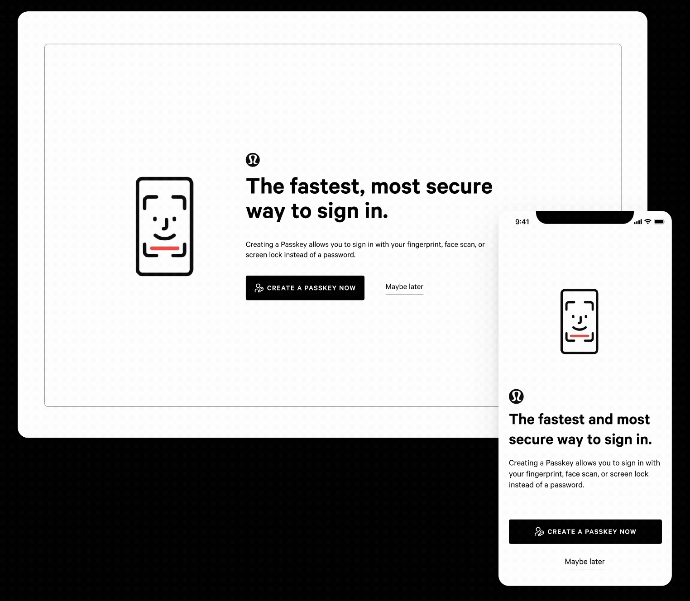
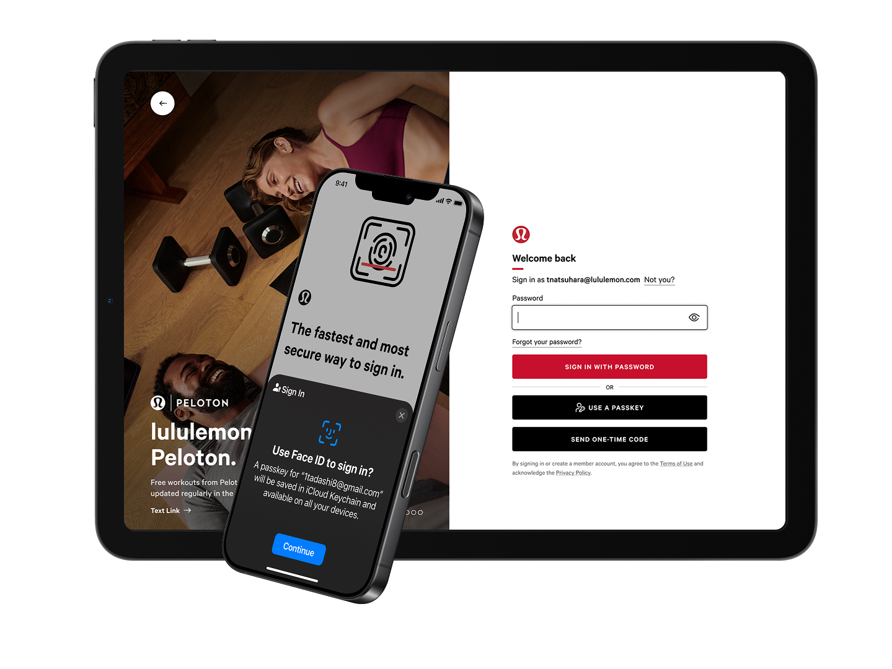
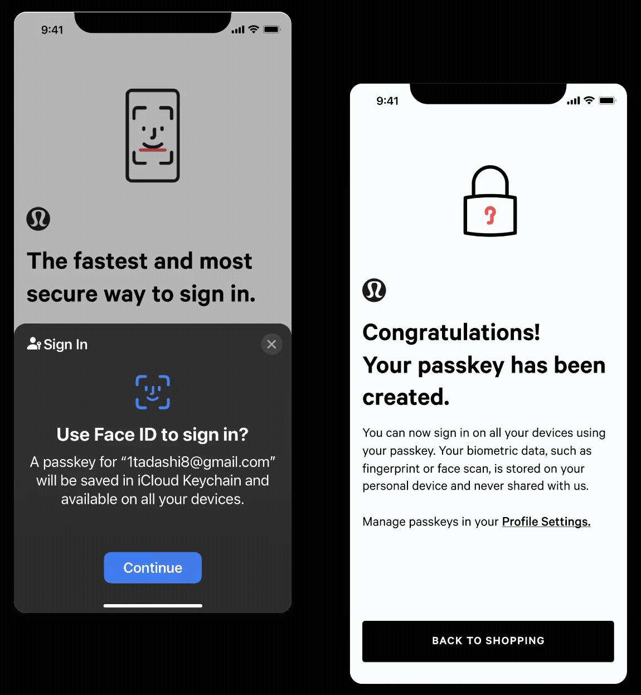
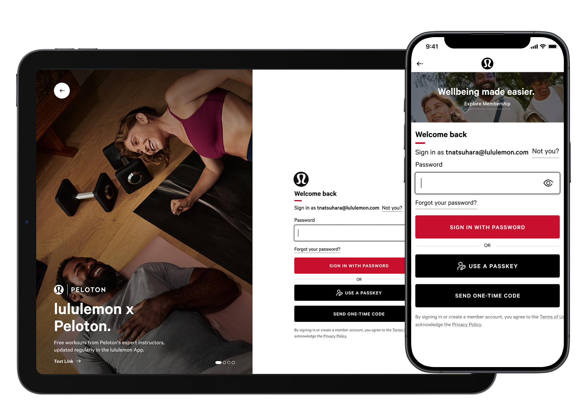
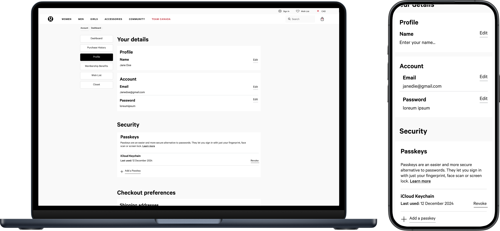
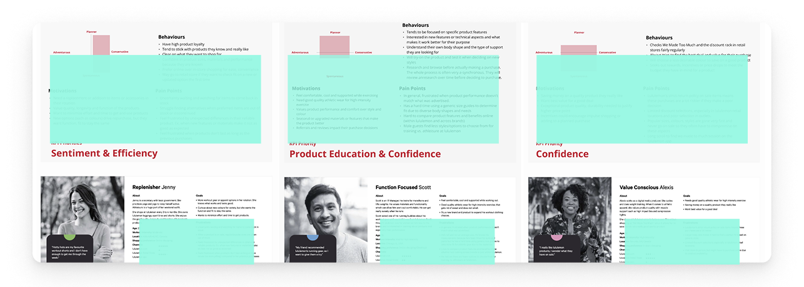

Designing a Passwordless Authentication Experience
How do you convince people to trust a sign-in method they’ve never used before?
- 90% fewer password resets after passkey rollout.
- Delivered passkey sign-in across app, web, and in-store.
- Zero security breaches via phishing since launch.
Why this project existed
Members sign in across the app, web, and in-store experiences. Passwords were the single biggest source of failed logins, abandoned carts, and support contacts. Every reset was friction at the exact moment someone wanted to engage with the brand.
Passkeys promised to remove that friction entirely while improving security. But nobody adopts an unfamiliar sign-in method just because it shipped. People had to be convinced it was safe, at the exact moment they were least patient.

Three questions that shaped the design
The design problems weren’t about screens; they were about trust, timing, and clarity at moments of friction.
Introducing something unfamiliar without creating anxiety
Passkeys are safer and faster than passwords, but most people had never heard of them. Login is the highest-stakes moment in the experience, so introducing a new mechanism there risked abandonment.
Decision · A contextual introduction that explains what’s happening and why before asking anything, so trust is earned before any action is requested.

Designing for people who don’t fully understand biometrics
Face ID and Touch ID are familiar, but their relationship to account security isn’t. Many customers assumed biometrics replaced their password, when in fact biometrics were the key itself.
Decision · A progressive disclosure pattern that shows the mechanism in action before explaining it, so the experience teaches rather than the copy.

Keeping the fallback from becoming the default
If the passkey flow felt uncertain, customers would retreat to passwords. The fallback had to exist without advertising itself as the safer choice.
Decision · A visually secondary fallback that is discoverable but doesn’t compete, so passkeys feel like the obvious path without removing the escape hatch.
Impact · The management and security controls weren’t on the roadmap. I surfaced the need through research and conversations with the dev team, built the case for it, and got cross-functional and leadership buy-in to ship create, remove, and manage controls.


Mapping the trust curve
I mapped the emotional journey from first encounter to confident use, identifying every moment where trust could be gained or lost. This let me prioritize which screens needed the most design attention and where copy was carrying more weight than the interaction.
Rapid prototyping let me test the introduction flow with the team before investing in high fidelity. The early rounds surfaced that the animation sequence mattered as much as the copy: people understood passkeys better when they saw the device interaction before reading about it.

Testing the trust model
I ran usability sessions focused on the moments of highest uncertainty: the initial introduction, the first-time setup, and recovery when something went wrong. Participants ranged from tech-comfortable to tech-avoidant.
The sessions confirmed the progressive disclosure approach. Participants who saw the interaction before the explanation consistently rated their confidence higher. They also surfaced a gap: customers needed reassurance that their old password still worked as a backup.
Sometimes it will forget what my password is, I have to type in my e-mail and send a link which I don’t like because then I have to exit and wait for the e-mail.
Confidence without complexity
Passkeys shipped across app, web, and in-store. The pattern established for this feature became the foundation for introducing other unfamiliar capabilities to a consumer audience.
90% fewer password resets
Removed the single biggest source of failed logins and support contacts, reframing authentication from a security checkbox into a trust-building moment.
Zero security breaches via phishing
Passkeys removed the credential-phishing attack surface entirely, a security outcome as much as a UX one.
Cross-surface delivery
Passkey sign-in delivered across app, web, and in-store with a consistent, reusable pattern the team applied to subsequent work.
What this project taught me
Authentication design is really trust design. The real challenge was understanding what made people feel safe enough to try something new at the moment they were most likely to abandon, not simply getting the interaction right.
I came in expecting to design a faster login. What shipped was closer to a method: a repeatable way to introduce something unfamiliar to people who have every reason to be cautious.